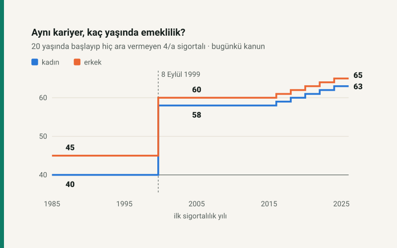

Özet
Soru. 1999 ve 2008 reformları ile 2023 düzenlemesi, aynı biçimde çalışan iki kişinin emeklilik koşullarını ne kadar farklılaştırdı?
Yöntem. 20 yaşında 4/a kapsamında ilk kez sigortalı olan ve yılda 360 gün prim ödeyen model bir sigortalı, 1985–2025 arasındaki her giriş yılı için bugün yürürlükteki kanun maddeleriyle hesaplandı. Kurallar sitenin testli emeklilik çekirdeklerinden okundu; nüfus göstergeleri Dünya Bankası'ndan.
Bulgular. (1) Tam emeklilik yaşı kadında 40'tan 63'e, erkekte 45'ten 65'e çıkıyor; en büyük sıçrama 8 Eylül 1999 eşiğinde, ikinci artış 2016 ve sonrası girişlerde. (2) 2023 düzenlemesi yalnız 1999 öncesi girişlilerin yaş şartını kaldırdı: 1995'te başlayan kadın için gereken yaş 51'den 40'a indi. (3) Aynı prim gününe bağlanan oran 15 puan düştü; ama kesintisiz çalışana daha uzun kariyer dayatıldığı için hak tarihindeki oran %78,0'den %86,0'ya çıkıyor. (4) 65 yaş üstünün çalışma çağı nüfusuna oranı 1965–1999 arasında 8,5–8,9 bandında kaldı, 2025'te 15,5 oldu.
Sonuç. Kesintisiz çalışan için dönüşüm, aylık oranını düşürmekten çok prim ödenecek yıl sayısını uzatarak işliyor ve yükü kuşaklar arasında eşitsiz dağıtıyor: bir gün arayla sigortalı olan iki kişi arasında 18 yıllık emeklilik farkı var.
Yöntem
Soru bir hesap sorusu olarak kuruldu: aynı kişi, yalnız işe başladığı tarih değiştiğinde, bugünkü kanunla ne zaman ve hangi oranla emekli olur? Kişiyi sabit tutmak, kuralların etkisini çalışma alışkanlığının, kazancın ya da sektörün etkisinden ayırır.
- Model sigortalı. 20. yaş gününde 4/a (hizmet akdiyle çalışan) olarak ilk kez sigortalı olur, hiç ara vermeden yılda 360 gün prim öder, borçlanma yapmaz. Kadın ve erkek ayrı hesaplanır.
- Giriş yılları. 1985'ten 2025'e her yılın 1 Ocak'ı; eşiklerde ayrıca 7 ve 8 Eylül 1999, 30 Nisan ve 1 Mayıs 2008.
- Hak tarihi. Tam yaşlılık aylığının bütün şartlarının (yaş, prim günü, sigortalılık süresi) en geç dolduğu gün. Kısmî aylık yolları ayrıca hesaplanır ama karşılaştırmaya girmez.
- Aylık bağlama oranı. 2000–30 Eylül 2008 hizmeti 506 sayılı Kanun Geçici m.82'nin kademeleriyle, sonrası 5510 m.29 ile; iki dönem 5510 Geçici m.2'deki kısmî aylık yöntemiyle birleştirilir. 2000 öncesi hizmet gösterge sistemine tabidir ve hesaplanmaz.
- Nüfus. Dünya Bankası World Development Indicators: yaşlı bağımlılık oranı (65+ nüfusun 15–64 yaş nüfusuna oranı, yüzde) ve doğumda beklenen yaşam süresi; 7 Ekim 2026'da indirildi.
Bütün kurallar kanun metninden okunup kodlandı ve otomatik testle denetleniyor; bu yazıdaki her sayı o kodla yeniden üretiliyor (aşağıda Yeniden üretim).
Üç kural, iki eşik
Emeklilik koşullarını belirleyen, sigortalının ilk sigortalı olduğu tarihtir. Kanun koyucu her reformda mevcut sigortalıları eski kurala bağlı bırakıp yeni kuralı yalnız yeni girenlere uyguladı; bu yüzden dönüşüm, tek bir tarihte değil, kuşaklar boyunca gerçekleşiyor.
Üç kural, iki eşik
Emeklilik koşullarını değiştiren kanunlar; vurgulu satırlar yeni kuralın başladığı eşikler.
Bulgu 1: Tam emeklilik yaşı
Model sigortalının tam emeklilik yaşı, ilk giriş yılına göre üç basamak çiziyor. 8 Eylül 1999'dan önce girenler bugün yaş şartı aranmadan, kadında 20, erkekte 25 yıllık sigortalılık ve 5.000–5.975 gün tamamlanınca emekli olabiliyor. 8 Eylül 1999'dan 30 Nisan 2008'e kadar girenler için yaş kadında 58, erkekte 60. 1 Mayıs 2008 sonrası girenlerde yaş, 7.200 günün dolduğu tarihe göre 2036'dan itibaren kademeli olarak 65'e çıkıyor.
Aynı kariyer, farklı giriş yılı
20 yaşında başlayıp yılda 360 gün prim ödeyen 4/a sigortalının tam emeklilik yaşı.
İki eşik aynı ağırlıkta değil. 1999 eşiği bir günde 18 yıllık fark yaratıyor: 7 Eylül 1999'da başlayan kadın 40, 8 Eylül'de başlayan 58 yaşında emekli oluyor. 2008 eşiği ise kesintisiz çalışan için görünmüyor; 7.200 gün 2036'dan önce dolduğu sürece yaş yine 58 ve 60. Artış, 7.200 günün 2036'da ya da sonrasında dolduğu, yani 2016 ve sonrasında başlayan kuşakta görünür hâle geliyor.
| İlk giriş | Kural grubu | Kadın | Erkek | Dayanak |
|---|---|---|---|---|
| 1985 | 1999 öncesi | 40 yaş · 20 yıl (2023 öncesi 41) | 45 yaş · 25 yıl (2023 öncesi 48) | 506 s.K. Geçici m.81/B, 5510 s.K. Geçici m.95 |
| 1995 | 1999 öncesi | 40 yaş · 20 yıl (2023 öncesi 51) | 45 yaş · 25 yıl (2023 öncesi 55) | 506 s.K. Geçici m.81/B, 5510 s.K. Geçici m.95 |
| 7 Eylül 1999 | 1999 öncesi | 40 yaş · 20 yıl (2023 öncesi 56) | 45 yaş · 25 yıl (2023 öncesi 58) | 506 s.K. Geçici m.81/B, 5510 s.K. Geçici m.95 |
| 8 Eylül 1999 | 1999–2008 | 58 yaş · 38 yıl | 60 yaş · 40 yıl | 5510 s.K. Geçici m.9/1 |
| 1 Mayıs 2008 | 2008 sonrası | 58 yaş · 38 yıl | 60 yaş · 40 yıl | 5510 s.K. m.28/2 |
| 2016 | 2008 sonrası | 59 yaş · 39 yıl | 61 yaş · 41 yıl | 5510 s.K. m.28/2 |
| 2020 | 2008 sonrası | 61 yaş · 41 yıl | 63 yaş · 43 yıl | 5510 s.K. m.28/2 |
| 2025 | 2008 sonrası | 63 yaş · 43 yıl | 65 yaş · 45 yıl | 5510 s.K. m.28/2 |
Bulgu 2: 2023 düzenlemesi neyi geri aldı?
1999 reformu (4447 sayılı Kanun) o tarihten önce girenlere de bir yaş şartı getirdi; 2002'de 4759 sayılı Kanun bu şartı yeniden düzenleyip 23 Mayıs 2002'deki sigortalılık süresine göre kademelendirdi (506 sayılı Kanun Geçici m.81/B). 2023'te 7438 sayılı Kanun'la 5510'a eklenen Geçici m.95 bu yaş şartını kaldırdı, gün ve süre şartlarına dokunmadı. Grafikteki kesikli çizgiler, aynı model sigortalının 2023 öncesi kuralla hangi yaşta emekli olabileceğini gösteriyor.
Düzenlemenin etkisi girişe göre büyüyor: 1985'te başlayan kadın için gereken yaş 41'den 40'a, 1995'te başlayan için 51'den 40'a indi. 1999 sonrası girenlerin koşulları değişmedi. Böylece 1999 eşiğindeki fark, 2023'te büyüdü.
Bulgu 3: Aylık bağlama oranı
Aylığın kazanca oranı, prim günüyle birlikte artıyor; ama artışın kuralı değişti. 2000–2008 kuralı ilk 3.600 güne her 360 gün için %3,5, sonraki 5.400 güne %2, sonrasına %1,5 veriyordu. Bugünkü kural her 360 gün için %2 veriyor ve %90'da kesiliyor. Aynı gün sayısında fark, ilk on yılın yüksek oranından geliyor ve 3.600 günden sonra 15 puanda sabitleniyor.
Aynı gün, iki oran
Toplam prim gününe göre aylık bağlama oranı; aylık, güncellenmiş ortalama kazanç × bu oran.
Bu karşılaştırma kuralı ölçüyor, kişiyi değil. Model sigortalı daha geç emekli olduğu için daha çok gün biriktiriyor: 2000'de başlayan kadın 58 yaşına kadar 13.680 gün öderek %78,0 oranla, 2025'te başlayan kadın 63 yaşına kadar 15.480 gün öderek %86,0 oranla emekli oluyor; 2025'te başlayan erkek %90,0 ile kanundaki tavana ulaşıyor. Yani kesintisiz çalışan için reform, oranı düşürmekten çok, aynı oranı daha uzun prim ödemesine bağladı. Kesintili kariyerde gün sayısı düştükçe kural farkı doğrudan aylığa yansır.
Bulgu 4: Demografik bağlam
Reformların tarihleri, nüfusun yaşlanmasının hızlandığı dönemle örtüşüyor. 65 yaş üstü nüfusun çalışma çağındaki nüfusa oranı, 506 sayılı Kanun'un ilk yıllarından 1999'a kadar neredeyse yatay seyretti (1965'te 8,5, 1999'da 8,9); 1999'dan 2025'e %74 artarak 15,5'e çıktı. Aynı dönemde doğumda beklenen yaşam süresi 1965'te 54,1, 2024'te 77,4 yıl.
Yaşlanma reformlarla hızlandı
65 yaş üstü nüfusun, 15–64 yaş nüfusuna oranı (yüzde). Kesikli çizgiler reform yılları.
Bu yazı nedensellik ölçmüyor: bağımlılık oranının yükselmesi reformların gerekçesi olarak sık anılır, ama kuralların hangi ölçüde bu baskıya yanıt verdiğini göstermek için sistemin gelir ve gider verisi gerekir. O veri bu sürümün kapsamında değil.
Tartışma
Ölçülen dönüşümün üç özelliği var. Birincisi, kuşak temelli: her reform yalnız yeni girenleri bağladı, bu yüzden 2008 kuralının yaş artışı ancak 2036'dan itibaren işliyor ve tam etkisi 2016 sonrası girişlerde görülüyor. İkincisi, süre üzerinden: aylık bağlama oranı aynı gün için düştü, ama gereken yaş ve dolayısıyla prim yılı arttığı için kesintisiz çalışanın oranı yükseldi; yük, aylıktan prim ödeme süresine taşındı. Üçüncüsü, eşitsiz: 2023 düzenlemesi 1999 öncesi girişlilerin koşulunu iyileştirdi, sonrakilere dokunmadı; 8 Eylül 1999 eşiğindeki fark büyüdü.
Bu bulgular bir değerlendirme değil, kuralın kendisinin ölçüsü. Hangi kuşağın ne kadar "kazandığını" söylemek için aylık alınan sürenin, yani emeklilik yaşındaki beklenen yaşam süresinin, ve ödenen primlerin bugünkü değerinin de hesaba katılması gerekir.
Sınırlar ve sonraki sürüm
- Model sigortalı kesintisiz çalışıyor. Gerçek kariyerler kesintili; yıllık ortalama prim günü sigortalıya, sektöre ve döneme göre değişir.
- Yalnız 4/a (hizmet akdi). 4/b (Bağ-Kur) ve 4/c (kamu görevlisi) kuralları farklı; 4/b sitenin çekirdeğinde var, 4/c yok.
- 2000 öncesi hizmet gösterge sistemine tabidir ve aylık bağlama oranı hesabına girmedi; bu yüzden 1985–1999 girişleri için oran verilmiyor.
- Aylık tutarı değil oranı ölçüyoruz: ortalama kazancın güncellenmesi (5510 m.3'teki güncelleme katsayısı), alt sınır aylık ve aylık artışları kapsam dışında.
- Fiili hizmet zammı, borçlanma, malullük ve kısmî aylık karşılaştırmaya girmedi.
- Nüfus göstergeleri BM Dünya Nüfus Beklentileri'ne dayanan tahminlerdir.
- Sonraki sürümde: TÜİK hayat tablolarından emeklilik yaşındaki beklenen yaşam süresi (aylık alınan yıl), SGK istatistik yıllıklarından aktif/pasif oranı ve gelir-gider dengesi, kesintili kariyer senaryoları.
Yeniden üretim
Hesap tamamen açık ve tekrarlanabilir. Emeklilik tarihi kuralları Ne zaman emekli olurum? aracının çekirdeğinde (ne-zaman-emekli-olurum/hesap.js), aylık bağlama oranı kuralları emekli aylığı hesaplama aracının çekirdeğinde (bordro/emeklilik-parametreleri.js, bordro/emeklilik-motor.js). Yazının modeli makaleler/turkiyede-sosyal-guvenligin-donusumu/donusum.js, nüfus verisi aynı klasördeki dunya-bankasi-2026-10.json. Grafikler ve tablo bu modülden çizilir; sayi-testi.js metindeki her sayıyı yeniden hesaplar ve kanun maddelerini bağımsız aritmetikle sınar. Çekirdekler hesap-cekirdegi deposunda ve npm'de, MIT lisansıyla açık; yazının modülü ve testi sitenin kaynak kodunda.
Atıf
Öner, K. (2026). Türkiye'de sosyal güvenliğin dönüşümü: aynı kariyer, üç kural (Sürüm 1.0). korayoner.dev. https://korayoner.dev/makaleler/turkiyede-sosyal-guvenligin-donusumu/
Sürüm değiştikçe bu satır güncellenir; önceki sürümlerin bulguları değişirse fark burada yazılır.
Kaynaklar
- 506 sayılı Sosyal Sigortalar Kanunu (kabul 17.7.1964): Geçici m.81 (4447 ile eklendi; (B) bendi 4759 sayılı Kanun, 23.5.2002 ile yeniden düzenlendi), Geçici m.82 (2000–2008 aylık bağlama oranları; 5510 ile yürürlükten kalktı, o dönemin hizmetine 5510 Geçici m.2 ile uygulanmaya devam ediyor)
- 4447 sayılı Kanun (kabul 25.8.1999), Resmî Gazete 8 Eylül 1999, sayı 23810: 1999 reformu
- 5510 sayılı Sosyal Sigortalar ve Genel Sağlık Sigortası Kanunu: m.28 (yaşlılık aylığı şartları ve 2036–2048 kademeleri), m.29 (aylık bağlama oranı; 5754 sayılı Kanun, 17.4.2008 ile değişik), Geçici m.2 (kısmî aylık), Geçici m.9 (1999–2008 girişliler), Geçici m.95 (7438 sayılı Kanun, 1.3.2023 ile eklendi)
- Dünya Bankası, yaşlı bağımlılık oranı ve doğumda beklenen yaşam süresi, Türkiye (kaynak güncellemesi 13 Temmuz 2026)
Sık sorulan sorular
EYT nedir, kimi kapsıyor?
Emeklilikte yaşa takılanlar için 2023'te yapılan düzenleme. 5510'a eklenen Geçici m.95, 8 Eylül 1999'dan önce sigortalı olanlardan yalnız yaş şartını kaldırdı; prim günü ve sigortalılık süresi şartları yerinde kaldı. 8 Eylül 1999 ve sonrasında girenleri kapsamaz.
2008 sonrası girenler kaç yaşında emekli olacak?
4/a için 7.200 gün ile kadında 58, erkekte 60 yaş; ama 7.200 gün 2036 ve sonrasında dolarsa yaş kademeli olarak artar ve 2048'den itibaren kadın ve erkekte 65 olur. Yaş, gün şartının dolduğu tarihteki kademeye göre belirlenir (5510 m.28).
Aylık bağlama oranı nedir?
Emekli aylığının, güncellenmiş ortalama kazancın yüzde kaçı olacağını belirleyen oran. 1 Ekim 2008 sonrası hizmet için her 360 gün için %2, en çok %90 (5510 m.29). 2000–2008 hizmeti için ilk 3.600 gün %3,5, sonraki 5.400 gün %2, sonrası %1,5 (506 Geçici m.82).
Bu sonuçlar benim için geçerli mi?
Model, 20 yaşında başlayıp hiç ara vermeyen bir 4/a sigortalı içindir. Kendi ilk giriş tarihiniz, prim gününüz ve borçlanmanızla hesap için Ne zaman emekli olurum? aracını kullanın; kesin bilgi SGK hizmet dökümündedir.
Bu yazı akademik bir kaynak olarak kullanılabilir mi?
Yazı sürümlüdür, yöntemi ve kodu açıktır ve atıf satırı verilmiştir. Bulgular bir model sigortalı için kanun maddelerinden hesaplanmıştır; genelleme yaparken sınırlar bölümünü dikkate alın.